構成
内容物
- M5Stack
- 走行台車
- モータドライバ
- バッテリー
- 12V 5Ah
- ジョイパッド
- 充電器
- Wi-Fi ルーター
- TP-link TL-WR802N
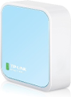
- TP-link TL-WR802N
※ Wi-Fi 接続にスマートフォンアプリを利用すると簡単に Wi-Fi 設定が行なえます。
その他は PC が必要です。
制御ボックス内部
以下、制御ボックス内部を示します。
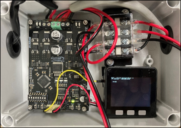
バッテリー接続方法
- バッテリースペースにバッテリーを置きます。

- 赤色の配線をバッテリーの赤色に差し込みます。
同様に黒色の配線をバッテリーの黒色に差し込みます。
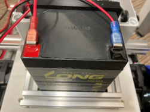
※配線を正しく繋がないと大変危険です。
配線を逆に繋いでしまった場合、基板がショートし故障します。
また、火災の危険性もありますので正しくお使いください。
充電方法
- バッテリーに繋がれている＋コネクタ及びーコネクタを抜きます。 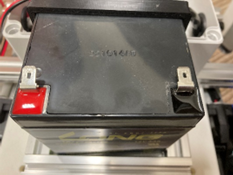
- 外したコネクタ部分に充電器の赤色を赤色へ接続、黒色を黒色に接続します。 接続されると充電中のランプが点灯します。 完了すると完了ランプが点灯します。 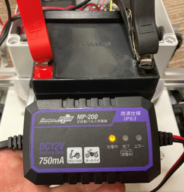 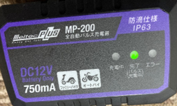
セットアップ
スマートフォンアプリインストール
本手順書では、スマートフォンアプリ Espressif Esptouch を使い M5Stack を Wi-Fi へ接続します。 App Store または Google Play より予めダウンロードしてください。
電源投入方法
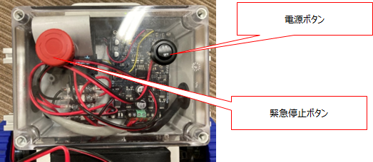
バッテリが接続されていることを確認し、電源ボタンを ON にする。 緊急停止ボタンも赤い部分を回し、解除を行う。 問題なく電源が投入されれば、M5Stack の画面が点滅します。
初回セットアップ手順
M5Stack 起動
- 上記の電源投入方法に従い電源を入れます。
- 起動後、M5Stack の画面に以下のように表示されます。
Smart Config[A] ・・・ESPTouchでSSID,KEYを設定できます IP/GATEWAY[B] ・・・IPアドレスとGATEWAYを設定できます Reset[C] ・・・リセットします - 対応するボタンは左から[A] [B] [C]となりますが、一番左の[A]ボタンを押して Wi-Fi 接続待機状態にしておきます。
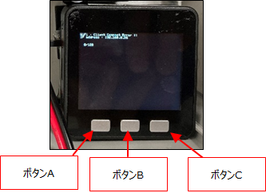
Wi-Fi へ接続
- PC とスマートフォンをそれぞれ Wi-Fi に繋ぎます。
※接続先の Wi-Fi アクセスポイントは同じでなければなりません。
※Wi-Fi は 2.4GHz 帯のみに限ります。 - M5Stack を Wi-Fi に繋ぎます。
- Espressif ESPtouch ＞ EspTouch にて１の接続先の Wi-Fi アクセスポイントのPassword を入力し、画面下方の Confirm を押します。
- 「”Esptouch”がローカルネットワーク上のデバイスの検索および接続を求めています」が出た場合、「許可」してください。
- 数秒後、下図のように接続成功画面が表示されたら、M5Stack が Wi-Fi へ接続完了になります。 ※Esptouch バージョンによって画面が違う可能性があります。 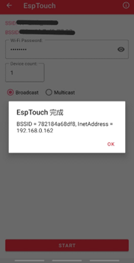
- M5Stack 側の画面上に自分の IP アドレスが表示されます。
IP address : 192.168.0.xx
PC とジョイパッドの接続
※ワイヤレスコントローラー(DUALSHOCK 4)のみでの対応となります。 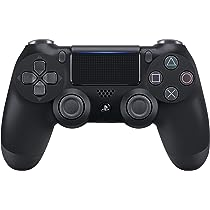
- 初回ペアリング時は SHARE ボタンと PS ボタンを長押し、側面の LED パターンの点滅が早くなる状態にします。
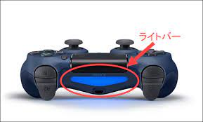 - この状態のときに Windows の設定画面より Bluetooth デバイスを追加するボタンを押してください。
- デバイスの候補から Wireless Controller が表示されていると思いますので、追加してください。
- ペアリングが無事行われているときは LED 部分が白色もしくは青色に点灯します。ペアリングが済んでいる場合は PS ボタンを一回押すと再接続が行われます。
起動手順
走行台車への接続方法（Windows ソフト）
- Wi-Fi ルータの電源が入っていることを確認します。
- PC の Wi-Fi 接続を確認します。
- 走行台車 Plus の電源を投入し、正しく立ち上がることを確認します。
- PC 側のデスクトップにあるアイコン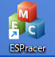をダブルクリックし、
LTR Connected Vehicle を起動します。
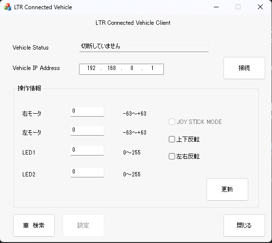 - Vehicle IP Address に上記取得した M5Stack の IP アドレスを入力し、接続ボタンを押します。 Vehicle Status が接続中になったら接続完了になります。
操作方法（Windows の場合）
ソフト上での操作
操作を行うには、操作情報 ＞ 右モータ・左モータの数値を記入し、更新を押すと、記入した数値でモータが回転を行います。 左右モータ共、プラス数値：前転、マイナス数値：後転、0：停止の動作を行います。
コントローラーでの操作
ワイヤレスコントローラー(DUALSHOCK 4)のみでの対応となります。
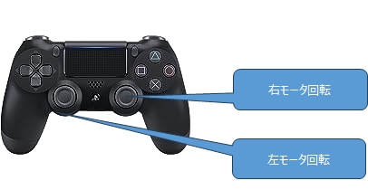
コントローラー操作を行う場合は、操作情報 ＞ JOYSTICK MODEにチェックを入れてください。同じく、操作情報 ＞ 上下反転、左右反転にもチェックを入れてください。
上下反転と左右反転にチェックを入れた状態では、コントローラーの左スティックが左モータ、右スティックが右モータに対応しており、どちらともスティックを前に傾ければ前転、後ろに傾ければ後転の動作を行います。
下記が DUALSHOCK 4 利用時の基本状態になります。
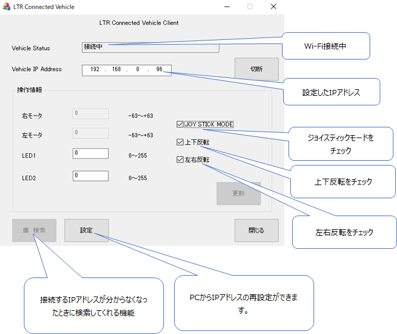